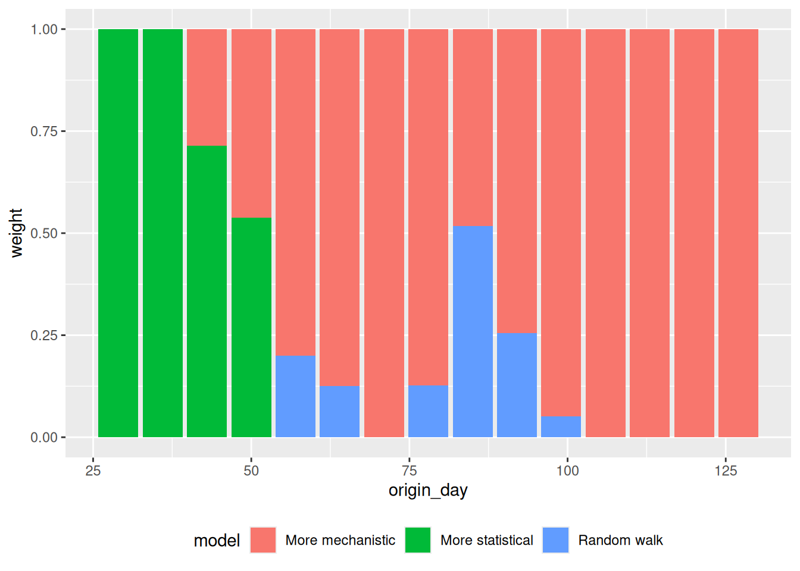

library("nfidd")
library("dplyr")
library("tidyr")
library("ggplot2")
library("scoringutils")
library("qrensemble")Forecast ensembles
Introduction
As we saw in the forecast evaluation session, different modelling approaches have different strength and weaknesses, and it is not clear a priori which one produces the best forecast in any given situation. One way to attempt to draw strength from a diversity of approaches is the creation of so-called forecast ensembles from the forecasts produced by different models.
In this session, we’ll build ensembles using forecasts from models of different levels of mechanism vs. statistical complexity. We will then compare the performance of these ensembles to the individual models and to each other. Rather than using the forecast samples we have been using we will instead now use quantile-based forecasts.
NoteRepresentations of probabilistic forecasts
Probabilistic predictions can be described as coming from a probabilistic probability distributions. In general and when using complex models such as the one we discuss in this course, these distributions can not be expressed in a simple analytical formal as we can do if, e.g. talking about common probability distributions such as the normal or gamma distributions. Instead, we typically use a limited number of samples generated from Monte-Carlo methods to represent the predictive distribution. However, this is not the only way to characterise distributions.
A quantile is the value that corresponds to a given quantile level of a distribution. For example, the median is the 50th quantile of a distribution, meaning that 50% of the values in the distribution are less than the median and 50% are greater. Similarly, the 90th quantile is the value that corresponds to 90% of the distribution being less than this value. If we characterise a predictive distribution by its quantiles, we specify these values at a range of specific quantile levels, e.g. from 5% to 95% in 5% steps.
Deciding how to represent forecasts depends on many things, for example the method used (and whether it produces samples by default) but also logistic considerations. Many collaborative forecasting projects and so-called forecasting hubs use quantile-based representations of forecasts in the hope to be able to characterise both the centre and tails of the distributions more reliably and with less demand on storage space than a sample-based representation.
Slides
Objectives
The aim of this session is to introduce the concept of ensembles of forecasts and to evaluate the performance of ensembles of the multiple models.
NoteSetup
Source file
The source file of this session is located at sessions/forecast-ensembles.qmd.
Libraries used
In this session we will use the nfidd package to load a data set of infection times and access stan models and helper functions, the dplyr and tidyr packages for data wrangling, ggplot2 library for plotting, the tidybayes package for extracting results of the inference and the scoringutils package for evaluating forecasts. We will also use qrensemble for quantile regression averaging in the weighted ensemble section.
Tip
The best way to interact with the material is via the Visual Editor of RStudio.
Initialisation
We set a random seed for reproducibility. Setting this ensures that you should get exactly the same results on your computer as we do.
set.seed(123)Individual forecast models
In this session we will use the forecasts from different models we introduced in the forecasting evaluation of multiple models session. There all shared the same basic renewal with delays structure but used different models for the evolution of the effective reproduction number over time. These were:
- A random walk model
- A simple model of susceptible depletion referred to as “More mechanistic”
- A differenced autoregressive model referred to as “More statistical”
As previously, we have fitted these models to a range of forecast dates so you don’t have to wait for the models to fit.
data(rw_forecasts, stat_forecasts, mech_forecasts)
forecasts <- bind_rows(
rw_forecasts,
mutate(stat_forecasts, model = "More statistical"),
mutate(mech_forecasts, model = "More mechanistic")
) |>
ungroup()
forecasts# A tibble: 672,000 × 7
day .draw .variable .value horizon origin_day model
<dbl> <int> <chr> <dbl> <int> <dbl> <chr>
1 23 1 forecast 9 1 22 Random walk
2 23 2 forecast 5 1 22 Random walk
3 23 3 forecast 5 1 22 Random walk
4 23 4 forecast 3 1 22 Random walk
5 23 5 forecast 5 1 22 Random walk
6 23 6 forecast 6 1 22 Random walk
7 23 7 forecast 3 1 22 Random walk
8 23 8 forecast 2 1 22 Random walk
9 23 9 forecast 2 1 22 Random walk
10 23 10 forecast 4 1 22 Random walk
# ℹ 671,990 more rows
TipHow did we generate these forecasts?
Some important things to note about these forecasts:
- We used a 14 day forecast horizon.
- Each forecast used all the data up to the forecast date.
- We generated 1000 predictive posterior samples for each forecast.
- We started forecasting 3 weeks into the outbreak and then forecast every 7 days until the end of the data (excluding the last 14 days to allow a full forecast).
- We use the same simulated outbreak data as before:
gen_time_pmf <- make_gen_time_pmf()
ip_pmf <- make_ip_pmf()
onset_df <- simulate_onsets(
make_daily_infections(infection_times), gen_time_pmf, ip_pmf
)
head(onset_df)# A tibble: 6 × 3
day onsets infections
<dbl> <int> <int>
1 1 0 0
2 2 0 1
3 3 0 0
4 4 1 2
5 5 0 1
6 6 0 1Converting sample-based forecasts to quantile-based forecasts
As in this session we will be thinking about forecasts in terms quantiles of the predictive distributions, we will need to convert our sample based forecasts to quantile-based forecasts. We will do this by focusing on the marginal distribution at each predicted time point, that is we treat each time point as independent of all others and calculate quantiles based on the sample predictive trajectories at that time point. An easy way to do this is to use the {scoringutils} package. The steps to do this are to first declare the forecasts as sample forecasts.
sample_forecasts <- forecasts |>
left_join(onset_df, by = "day") |>
filter(!is.na(.value)) |>
as_forecast_sample(
forecast_unit = c("origin_day", "horizon", "model", "day"),
observed = "onsets",
predicted = ".value",
sample_id = ".draw"
)
sample_forecastsForecast type: sampleForecast unit:origin_day, horizon, model, and day
sample_id predicted observed origin_day horizon model day
<int> <num> <int> <num> <int> <char> <num>
1: 1 9 4 22 1 Random walk 23
2: 2 5 4 22 1 Random walk 23
3: 3 5 4 22 1 Random walk 23
4: 4 3 4 22 1 Random walk 23
5: 5 5 4 22 1 Random walk 23
---
671996: 996 4 2 127 14 More mechanistic 141
671997: 997 2 2 127 14 More mechanistic 141
671998: 998 1 2 127 14 More mechanistic 141
671999: 999 2 2 127 14 More mechanistic 141
672000: 1000 1 2 127 14 More mechanistic 141and then convert to quantile forecasts.
quantile_forecasts <- sample_forecasts |>
as_forecast_quantile()
quantile_forecastsForecast type: quantileForecast unit:origin_day, horizon, model, and day
observed origin_day horizon model day quantile_level
<int> <num> <int> <char> <num> <num>
1: 4 22 1 Random walk 23 0.05
2: 4 22 1 Random walk 23 0.25
3: 4 22 1 Random walk 23 0.50
4: 4 22 1 Random walk 23 0.75
5: 4 22 1 Random walk 23 0.95
---
3356: 2 127 14 More mechanistic 141 0.05
3357: 2 127 14 More mechanistic 141 0.25
3358: 2 127 14 More mechanistic 141 0.50
3359: 2 127 14 More mechanistic 141 0.75
3360: 2 127 14 More mechanistic 141 0.95
predicted
<num>
1: 1
2: 2
3: 3
4: 5
5: 8
---
3356: 0
3357: 2
3358: 3
3359: 4
3360: 6
TipWhat is happening here?
- Internally
scoringutilsis calculating the quantiles of the sample-based forecasts. - It does this by using a set of default quantiles but different ones can be specified by the user to override the default.
- It then calls the
quantile()function from base R to calculate the quantiles. - This is estimating the value that corresponds to each given quantile level by ordering the samples and then taking the value at the appropriate position.
Simple unweighted ensembles
A good place to start when building ensembles is to take the mean or median of the unweighted forecast at each quantile level, and treat these as quantiles of the ensemble predictive distribution. Typically, the median is preferred when outlier forecasts are likely to be present as it is less sensitive to these. However, the mean is preferred when forecasters have more faith in models that diverge from the median performance and want to represent this in the ensemble.
NoteVincent average
The procedure of calculating quantiles of a new distribution as a weighted average of quantiles of constituent distributions (e.g., different measurements) is called a Vincent average, after the biologist Stella Vincent who described this as early as 1912 when studying the function of whiskers in the behaviour of white rats.
Construction
We can calculate the mean ensemble by taking the mean of the forecasts at each quantile level.
mean_ensemble <- quantile_forecasts |>
as_tibble() |>
summarise(
predicted = mean(predicted),
observed = unique(observed),
model = "Mean ensemble",
.by = c(origin_day, horizon, quantile_level, day)
)Similarly, we can calculate the median ensemble by taking the median of the forecasts at each quantile level.
median_ensemble <- quantile_forecasts |>
as_tibble() |>
summarise(
predicted = median(predicted),
observed = unique(observed),
model = "Median ensemble",
.by = c(origin_day, horizon, quantile_level, day)
)We combine the ensembles into a single data frame along with the individual forecasts in order to make visualisation easier.
simple_ensembles <- bind_rows(
mean_ensemble,
median_ensemble,
quantile_forecasts
)Visualisation
How do these ensembles visually differ from the individual models? Lets start by plotting a single forecast from each model and comparing them.
plot_ensembles <- function(data, obs_data) {
data |>
pivot_wider(names_from = quantile_level, values_from = predicted) |>
ggplot(aes(x = day)) +
geom_ribbon(
aes(
ymin = .data[["0.05"]], ymax = .data[["0.95"]], fill = model,
group = origin_day
),
alpha = 0.2
) +
geom_ribbon(
aes(
ymin = .data[["0.25"]], ymax = .data[["0.75"]], fill = model,
group = origin_day
),
alpha = 0.5
) +
geom_point(
data = obs_data,
aes(x = day, y = onsets), color = "black"
) +
scale_color_binned(type = "viridis") +
facet_wrap(~model) +
theme(legend.position = "none")
}
plot_single_forecasts <- simple_ensembles |>
filter(origin_day == 57) |>
plot_ensembles(onset_df |> filter(day >= 57, day <= 57 + 14))
plot_single_forecastsAgain we can get a different perspective by plotting the forecasts on the log scale.
plot_single_forecasts +
scale_y_log10()
TipTake 2 minutes
How do these ensembles compare to the individual models? How do they differ from each other?
NoteSolution
How do these ensembles compare to the individual models?
- Both of the simple ensembles appear to be less variable than the statistical models but are more variable than the mechanistic model.
- Both ensembles are more like the statistical models than the mechanistic model.
How do they differ from each other?
- The mean ensemble has slightly tighter uncertainty bounds than the median ensemble.
Now lets plot a range of forecasts from each model and ensemble.
plot_multiple_forecasts <- simple_ensembles |>
plot_ensembles(onset_df |> filter(day >= 21)) +
lims(y = c(0, 400))
plot_multiple_forecastsWarning: Removed 17 rows containing missing values or values outside the scale range
(`geom_ribbon()`).Warning: Removed 1 row containing missing values or values outside the scale range
(`geom_ribbon()`).Again we can get a different perspective by plotting the forecasts on the log scale.
plot_multiple_forecasts +
scale_y_log10()Scale for y is already present.
Adding another scale for y, which will replace the existing scale.Warning in scale_y_log10(): log-10 transformation introduced infinite values.
log-10 transformation introduced infinite values.
log-10 transformation introduced infinite values.
TipTake 2 minutes
How do these ensembles compare to the individual models?
How do they differ from each other?
Are there any differences across forecast dates?
NoteSolution
How do these ensembles compare to the individual models?
- As before, the ensembles appear to be less variable than the statistical models but more variable than the mechanistic model.
How do they differ from each other?
- The mean ensemble has marginally tighter uncertainty bounds than the median ensemble as for the single forecast.
Are there any differences across forecast dates?
- The mean ensemble appears to be more variable across forecast dates than the median ensemble with this being more pronounced after the peak of the outbreak.
Evaluation
As in the forecast evaluation session, we can evaluate the accuracy of the ensembles using the {scoringutils} package and in particular the score() function.
ensemble_scores <- simple_ensembles |>
as_forecast_quantile(forecast_unit = c("origin_day", "horizon", "model")) |>
score()
Note
The weighted interval score (WIS) is a proper scoring rule for quantile forecasts that approximates the Continuous Ranked Probability Score (CRPS) by considering a weighted sum of multiple prediction intervals. As the number of intervals increases, the WIS converges to the CRPS, combining sharpness and penalties for over- and under-prediction.
We see it here as we are scoring quantiles and not samples hence we cannot use CRPS as we did before.
Again we start with a high level overview of the scores by model.
ensemble_scores |>
summarise_scores(by = c("model")) model wis overprediction underprediction dispersion
<char> <num> <num> <num> <num>
1: Mean ensemble 8.368094 4.053482 1.1252976 3.189314
2: Median ensemble 10.408312 5.707768 1.2781250 3.422420
3: Random walk 11.942152 7.041786 0.8459821 4.054384
4: More statistical 11.036451 5.458304 1.7772321 3.800915
5: More mechanistic 5.647196 1.664643 2.2699107 1.712643
bias interval_coverage_50 interval_coverage_90 ae_median
<num> <num> <num> <num>
1: 0.18348214 0.5089286 0.8750000 12.80208
2: 0.13883929 0.5178571 0.8660714 15.92857
3: 0.20133929 0.5133929 0.8616071 18.25893
4: -0.02857143 0.5000000 0.8526786 16.83482
5: 0.21741071 0.4598214 0.7633929 8.75000
TipTake 5 minutes
What do you think the scores are telling you? Which model do you think is best? What other scoring breakdowns might you want to look at?
NoteSolution
What do you think the scores are telling you? Which model do you think is best?
- The mean ensemble appears to be the best performing ensemble model overall.
- However, the more mechanistic model appears to be the best performing model overall.
What other scoring breakdowns might you want to look at?
- There might be variation over forecast dates or horizons between the different ensemble methods
Unweighted ensembles of filtered models
A simple method that is often used to improve ensemble performance is to prune out models that perform very poorly. Balancing this can be tricky however as it can be hard to know how much to prune. The key tradeoff to consider is how much to optimise for which models have performed well in the past (and what your definition of the past is, for example all time or only the last few weeks) versus how much you want to allow for the possibility that these models may not perform well in the future.
Construction
As we just saw, the random walk model (our original baseline model) is performing poorly in comparison to the other models. We can remove this model from the ensemble and see if this improves the performance of the ensemble.
WarningWarning
Here we are technically cheating a little as we are using the test data to help select the models to include in the ensemble. In the real world you would not do this as you would not have access to the test data and so this is an idealised scenario.
filtered_models <- quantile_forecasts |>
filter(model != "Random walk")We then need to recalculate the ensembles. First the mean ensemble,
filtered_mean_ensembles <- filtered_models |>
as_tibble() |>
summarise(
predicted = mean(predicted),
observed = unique(observed),
model = "Mean filtered ensemble",
.by = c(origin_day, horizon, quantile_level, day)
)and then the median ensemble.
filtered_median_ensembles <- filtered_models |>
as_tibble() |>
summarise(
predicted = median(predicted),
observed = unique(observed),
model = "Median filtered ensemble",
.by = c(origin_day, horizon, quantile_level, day)
)We combine these new ensembles with our previous ensembles in order to make visualisation easier.
filtered_ensembles <- bind_rows(
filtered_mean_ensembles,
filtered_median_ensembles,
simple_ensembles
)Visualisation
As for the simple ensembles, we can plot a single forecast from each model and ensemble.
filtered_ensembles |>
filter(origin_day == 57) |>
plot_ensembles(onset_df |> filter(day >= 57, day <= 57 + 14))and on the log scale.
filtered_ensembles |>
filter(origin_day == 57) |>
plot_ensembles(onset_df |> filter(day >= 57, day <= 57 + 14)) +
scale_y_log10()To get an overview we also plot a range of forecasts from each model and ensemble.
plot_multiple_filtered_forecasts <- filtered_ensembles |>
plot_ensembles(onset_df |> filter(day >= 21)) +
lims(y = c(0, 400))
plot_multiple_filtered_forecastsWarning: Removed 17 rows containing missing values or values outside the scale range
(`geom_ribbon()`).Warning: Removed 1 row containing missing values or values outside the scale range
(`geom_ribbon()`).
and on the log scale.
plot_multiple_filtered_forecasts +
scale_y_log10()Scale for y is already present.
Adding another scale for y, which will replace the existing scale.Warning in scale_y_log10(): log-10 transformation introduced infinite values.
log-10 transformation introduced infinite values.
log-10 transformation introduced infinite values.
TipTake 2 minutes
How do the filtered ensembles compare to the simple ensembles? Which do you think is best?
NoteSolution
How do the filtered ensembles compare to the simple ensembles?
- The filtered ensembles appear to be less variable than the simple ensembles.
- The filtered ensembles appear to be more like the mechanistic model than the simple ensembles.
Which do you think is best?
- Visually, the filtered ensembles appear very similar. This makes sense given we know there are only two models left in the ensemble.
Evaluation
Let us score the filtered ensembles.
filtered_ensemble_scores <- filtered_ensembles |>
as_forecast_quantile(
forecast_unit = c(
"origin_day", "horizon", "model"
)
) |>
score()Again we can get a high level overview of the scores by model.
filtered_ensemble_scores |>
summarise_scores(by = c("model")) model wis overprediction underprediction dispersion
<char> <num> <num> <num> <num>
1: Mean filtered ensemble 7.001690 2.785045 1.4598661 2.756779
2: Median filtered ensemble 7.001690 2.785045 1.4598661 2.756779
3: Mean ensemble 8.368094 4.053482 1.1252976 3.189314
4: Median ensemble 10.408312 5.707768 1.2781250 3.422420
5: Random walk 11.942152 7.041786 0.8459821 4.054384
6: More statistical 11.036451 5.458304 1.7772321 3.800915
7: More mechanistic 5.647196 1.664643 2.2699107 1.712643
bias interval_coverage_50 interval_coverage_90 ae_median
<num> <num> <num> <num>
1: 0.13482143 0.5089286 0.8705357 10.76562
2: 0.13482143 0.5089286 0.8705357 10.76562
3: 0.18348214 0.5089286 0.8750000 12.80208
4: 0.13883929 0.5178571 0.8660714 15.92857
5: 0.20133929 0.5133929 0.8616071 18.25893
6: -0.02857143 0.5000000 0.8526786 16.83482
7: 0.21741071 0.4598214 0.7633929 8.75000
TipTake 2 minutes
How do the filtered ensembles compare to the simple ensembles?
NoteSolution
How do the filtered ensembles compare to the simple ensembles?
- The filtered ensembles appear to be more accurate than the simple ensembles.
- As you would expect they are an average of the more mechanistic model and the more statistical model.
- As there are only two models in the ensemble, the median and mean ensembles are identical.
- For the first time there are features of the ensemble that outperform the more mechanistic model though it remains the best performing model overall.
Weighted quantile ensembles
The simple mean and median we used to average quantiles earlier treats every model as the same. We could try to improve performance by replacing this with a weighted mean (or weighted median), for example given greater weight to models that have proven to make better forecasts. Here we will explore two common weighting methods:
- Inverse WIS weighting
- Quantile regression averaging
Inverse WIS weighting is a simple method that weights the forecasts by the inverse of their WIS over some period (note that identifying what this period should be in order to produce the best forecasts is not straightforward as predictive performance may vary over time if models are good at different things). The main benefit of WIS weighting over other methods is that it is simple to understand and implement. However, it does not optimise the weights directly to produce the best forecasts. It relies on the hope that giving more weight to better performing models yields a better ensemble
Quantile regression averaging on the other hand does optimise the weights directly in order to yield the best scores on past data.
Construction
Inverse WIS weighting
In order to perform inverse WIS weighting we first need to calculate the WIS for each model. We already have this from the previous evaluation so we can reuse this.
weights_per_model <- ensemble_scores |>
dplyr::filter(
model %in% c("More mechanistic", "More statistical", "Random walk")
) |>
summarise_scores(by = c("model", "origin_day")) |>
select(model, origin_day, wis) |>
mutate(inv_wis = 1 / wis) |>
mutate(
inv_wis_total_by_date = sum(inv_wis), .by = origin_day
) |>
mutate(weights = inv_wis / inv_wis_total_by_date)
weights_per_model |>
select(model, origin_day, weights) |>
pivot_wider(names_from = model, values_from = weights)# A tibble: 16 × 4
origin_day `Random walk` `More statistical` `More mechanistic`
<dbl> <dbl> <dbl> <dbl>
1 22 0.325 0.412 0.262
2 29 0.428 0.332 0.240
3 36 0.375 0.302 0.323
4 43 0.320 0.249 0.431
5 50 0.281 0.236 0.484
6 57 0.276 0.257 0.467
7 64 0.254 0.257 0.489
8 71 0.433 0.287 0.279
9 78 0.244 0.328 0.428
10 85 0.0660 0.0749 0.859
11 92 0.228 0.280 0.492
12 99 0.205 0.308 0.486
13 106 0.150 0.173 0.677
14 113 0.316 0.479 0.205
15 120 0.437 0.385 0.178
16 127 0.316 0.257 0.428Now lets apply the weights to the forecast models. As we can only use information that was available at the time of the forecast to perform the weighting, we use weights from two weeks prior to the forecast date to inform each ensemble.
inverse_wis_ensemble <- quantile_forecasts |>
as_tibble() |>
left_join(
weights_per_model |>
mutate(origin_day = origin_day + 14),
by = c("model", "origin_day")
) |>
# assign equal weights if no weights are available
mutate(weights = ifelse(is.na(weights), 1/3, weights)) |>
summarise(
predicted = sum(predicted * weights),
observed = unique(observed),
model = "Inverse WIS ensemble",
.by = c(origin_day, horizon, quantile_level, day)
)Quantile regression averaging
We futher to perform quantile regression averaging (QRA) for each forecast date. Again we need to consider how many previous forecasts we wish to use to inform each ensemble forecast. Here we decide to use up to 3 weeks of previous forecasts to inform each QRA ensemble.
forecast_dates <- quantile_forecasts |>
as_tibble() |>
pull(origin_day) |>
unique()
qra_by_forecast <- function(
quantile_forecasts,
forecast_dates,
group = c("target_end_date"),
...
) {
lapply(forecast_dates, \(x) {
quantile_forecasts |>
mutate(target_end_date = x) |>
dplyr::filter(origin_day <= x) |>
dplyr::filter(origin_day >= x - (3 * 7 + 1)) |>
dplyr::filter(origin_day == x | day <= x) |>
qra(
group = group,
target = c(origin_day = x),
...
)
})
}
qra_ensembles_obj <- qra_by_forecast(
quantile_forecasts,
forecast_dates[-1],
group = c("target_end_date")
)
qra_weights <- seq_along(qra_ensembles_obj) |>
lapply(\(i) attr(qra_ensembles_obj[[i]], "weights") |>
mutate(origin_day = forecast_dates[i + 1])
) |>
bind_rows() |>
dplyr::filter(quantile == 0.5)
qra_ensembles <- qra_ensembles_obj |>
bind_rows()Instead of creating a single optimised ensemble and using this for all forecast horizons we might also want to consider a separate optimised QRA ensemble for each forecast horizon, reflecting that models might perform differently depending on how far ahead a forecast is produced. We can do this using qra() with the group argument.
qra_ensembles_by_horizon <- qra_by_forecast(
quantile_forecasts,
forecast_dates[-c(1:2)],
group = c("horizon", "target_end_date"),
model = "QRA by horizon"
)
qra_weights_by_horizon <- seq_along(qra_ensembles_by_horizon) |>
lapply(\(i) attr(qra_ensembles_by_horizon[[i]], "weights") |>
mutate(origin_day = forecast_dates[i + 2])
) |>
bind_rows()Combine ensembles
weighted_ensembles <- bind_rows(
inverse_wis_ensemble,
qra_ensembles,
qra_ensembles_by_horizon,
filtered_ensembles
) |>
# remove the repeated filtered ensemble
filter(model != "Mean filtered ensemble")Visualisation
Single forecasts
Again we start by plotting a single forecast from each model and ensemble.
weighted_ensembles |>
filter(origin_day == 57) |>
plot_ensembles(onset_df |> filter(day >= 57, day <= 57 + 14))and on the log scale.
weighted_ensembles |>
filter(origin_day == 57) |>
plot_ensembles(onset_df |> filter(day >= 57, day <= 57 + 14)) +
scale_y_log10()Multiple forecasts
As before we can plot a range of forecasts from each model and ensemble.
plot_multiple_weighted_forecasts <- weighted_ensembles |>
plot_ensembles(onset_df |> filter(day >= 21)) +
lims(y = c(0, 400))
plot_multiple_weighted_forecastsWarning: Removed 18 rows containing missing values or values outside the scale range
(`geom_ribbon()`).Warning: Removed 1 row containing missing values or values outside the scale range
(`geom_ribbon()`).and on the log scale.
plot_multiple_weighted_forecasts +
scale_y_log10()Scale for y is already present.
Adding another scale for y, which will replace the existing scale.Warning in scale_y_log10(): log-10 transformation introduced infinite values.
log-10 transformation introduced infinite values.
log-10 transformation introduced infinite values.
TipTake 2 minutes
How do the weighted ensembles compare to the simple ensembles? Which do you think is best? Are you surprised by the results? Can you think of any reasons that would explain them?
Models weights
Now that we have a weighted ensemble, we can also look at the weights of the individual models. Here we do this for the quantile regression averaging ensemble but we could also do this for the inverse WIS ensemble or any other weighted ensemble (for an unweighted ensemble the weights are all equal).
qra_weights |>
ggplot(aes(x = origin_day, y = weight, fill = model)) +
geom_col(position = "stack") +
theme(legend.position = "bottom")
TipTake 2 minutes
How do the weights change over time? Are you surprised by the results given what you know about the models performance?
NoteSolution
How do the weights change over time?
- Early on the more statistical models have higher weights
- Gradually the random walk model gains weight and by the end of the forecast horizon it represents the entire ensemble.
- Near the peak the mechanistic model also gains weight.
Are you surprised by the results given what you know about the models performance?
- As the random walk model is performing poorly, you would expect it to have low weights but actually it often doesn’t. This implies that its poor performance is restricted to certain parts of the outbreak.
- Even though the mechanistic model performs really well overall it is only included in the ensemble around the peak. This could be because the training data doesn’t include changes in the epidemic dynamics and so the mechanistic model is not given sufficient weight.
Evaluation
For a final evaluation we can look at the scores for each model and ensemble again. We remove the two weeks of forecasts as these do not have a quantile regression average forecasts as these require training data to estimate.
weighted_ensemble_scores <- weighted_ensembles |>
filter(origin_day >= 29) |>
as_forecast_quantile(forecast_unit = c("origin_day", "horizon", "model")) |>
score()Again we can get a high level overview of the scores by model.
weighted_ensemble_scores |>
summarise_scores(by = c("model")) model wis overprediction underprediction
<char> <num> <num> <num>
1: Inverse WIS ensemble 8.452858 4.078468 1.3139919
2: Quantile Regression Average 7.438817 2.930858 2.1179392
3: QRA by horizon 8.006609 3.222753 2.2214614
4: Median filtered ensemble 7.255293 2.848571 1.5567143
5: Mean ensemble 8.709146 4.197524 1.1996825
6: Median ensemble 10.878952 5.954000 1.3623810
7: Random walk 12.514186 7.376952 0.9014286
8: More statistical 11.595419 5.756476 1.8947619
9: More mechanistic 5.745548 1.568476 2.4212381
dispersion bias interval_coverage_50 interval_coverage_90 ae_median
<num> <num> <num> <num> <num>
1: 3.060398 0.13714286 0.5095238 0.8238095 12.83756
2: 2.390020 0.07571429 0.4809524 0.7857143 11.43652
3: 2.562395 0.12193878 0.4642857 0.7908163 12.21552
4: 2.850007 0.09380952 0.5285714 0.8666667 11.12143
5: 3.311940 0.14571429 0.5285714 0.8714286 13.28413
6: 3.562571 0.10047619 0.5380952 0.8619048 16.60000
7: 4.235805 0.16714286 0.5333333 0.8571429 19.08571
8: 3.944181 -0.06809524 0.4952381 0.8428571 17.69048
9: 1.755833 0.17571429 0.4809524 0.7714286 8.87619Remembering the session on forecast evaluation, we should also check performance on the log scale.
log_ensemble_scores <- weighted_ensembles |>
filter(origin_day >= 29) |>
as_forecast_quantile(forecast_unit = c("origin_day", "horizon", "model")) |>
transform_forecasts(
fun = log_shift,
offset = 1,
append = FALSE
) |>
score()
log_ensemble_scores |>
summarise_scores(by = c("model")) model wis overprediction underprediction
<char> <num> <num> <num>
1: Inverse WIS ensemble 0.1742010 0.07881698 0.03377327
2: Quantile Regression Average 0.1807427 0.08359583 0.03726745
3: QRA by horizon 0.1673600 0.08902760 0.02703905
4: Median filtered ensemble 0.1565710 0.06928781 0.02878697
5: Mean ensemble 0.1702717 0.07649681 0.02965817
6: Median ensemble 0.1930613 0.07919152 0.04153467
7: Random walk 0.2059349 0.09204866 0.03774232
8: More statistical 0.2265978 0.06678145 0.07615982
9: More mechanistic 0.1612289 0.09838393 0.02188482
dispersion bias interval_coverage_50 interval_coverage_90 ae_median
<num> <num> <num> <num> <num>
1: 0.06161071 0.13714286 0.5095238 0.8238095 0.2670075
2: 0.05987939 0.07809524 0.4809524 0.7857143 0.2719032
3: 0.05129337 0.12448980 0.4744898 0.7908163 0.2469915
4: 0.05849623 0.09380952 0.5285714 0.8666667 0.2397427
5: 0.06411670 0.14571429 0.5285714 0.8714286 0.2602670
6: 0.07233514 0.10047619 0.5380952 0.8619048 0.2978788
7: 0.07614388 0.16714286 0.5333333 0.8571429 0.3172793
8: 0.08365652 -0.06809524 0.4952381 0.8428571 0.3422939
9: 0.04096012 0.17571429 0.4809524 0.7714286 0.2445859
TipTake 2 minutes
How do the weighted ensembles compare to the simple ensembles on the natural and log scale?
NoteSolution
The best ensembles slightly outperform some of the simple ensembles but there is no obvious benefit from using weighted ensembles. Why might this be the case?